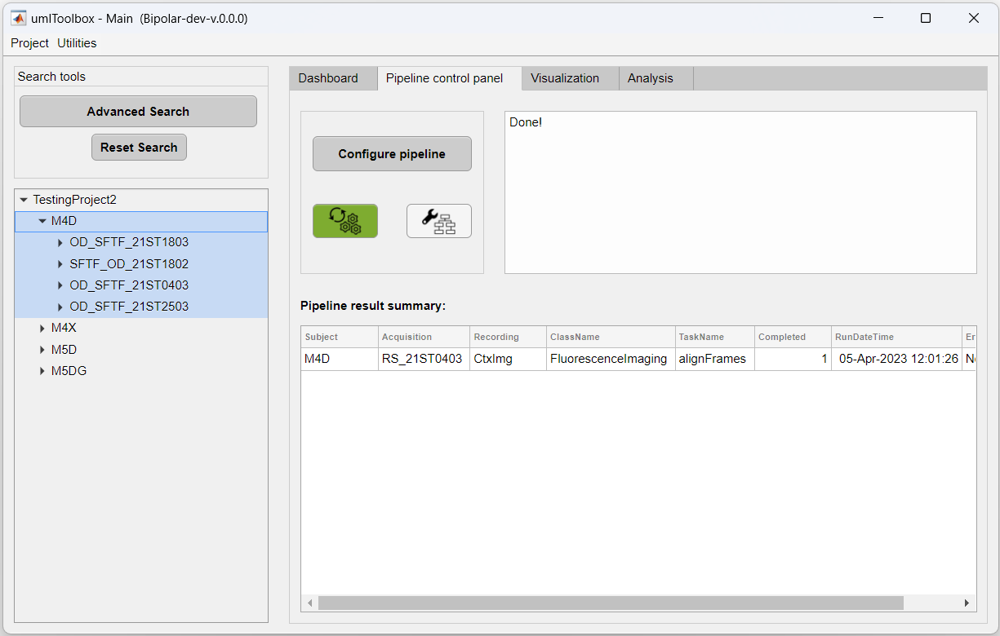

Once ROIs are created, one can then extract and aggregate the data from individual ROIs across multiple recordings. First, the data extraction from ROIs allows the exclusion of non-pertinent information. Secondly, the (spatial) aggregation of ROI data adds an extra layer of data reduction. Both operations represent a crucial step in an imaging project where meaningful values are created that will ultimately be used for group comparisons and statistics.
Main steps of a typical imaging project to underscore the role of ROI extraction and aggregation.
a) Processing steps for a single experiment where the extraction and aggregation of ROI data yields ROI values.
b) The ROI values of each recording session is grouped for comparisons.
In this tutorial, we use two distinct imaging datasets to illustrate the ROI data extraction. The first one consists of visual responses to drifting gratings (event-triggered data) while the second one is a resting state recording. For the former, we will show how to extract the response amplitude of visual areas using the function getDataFromROI. Whereas for the latter, we will use the function genCorrelationMatrix to create a matrix with the Pearson's correlation values between the different visual cortical areas of the mouse.
Before extracting the data from the ROIs, we assume that the following procedures were previously executed:
As introduced above, the event-triggered dataset consists of the visual responses to drifting gratings. The data used as input for the extraction and aggregation function consists of cortical activation maps containing the response amplitude of the fluorescence signal to the gratings. The preprocessing workflow of the amplitude maps is shown below:
In this part of the tutorial, you will learn how to extract and calculate the average response amplitude of each ROI from cortical activation maps.
1. First open your project file in the main GUI. In Matlab's command window, type:
umIToolbox('C:/FOLDER/projectfile.mat');
2. Then, go to the Pipeline control panel tab and highlight the recordings to extract. Here, we will extract the data from all cortical amplitude maps from the mouse M4D:
3. Click on Select to confirm selection and on Launch Pipeline Config to open the pipeline configuration app.
4. Select the FluorescenceImaging object:

5. In the Pipeline Configuration app, select the function getDataFromROI (step 1), add it to the pipeline (step 2), select the function (step 3) and click on Set Options button (step 4):
The function getDataFromROI has two parameters: the file name containing the ROI information (i.e. the ROImasks_<NAME>.mat file) and the spatial aggregation function to be applied (SpatialAggFcn). Here we will use the ROIs stored in ROImasks_data.mat file and the ROI pixel values will be averaged using the mean option for the SpatialAggFcn parameter:

6. You can also rename the output file. To do so, click on Save step button and rename the file. Here the output file is renamed to ROI_dataSF:
7. Next, click on Save config. button to apply the pipeline.
8. Now, select the FluorescenceImaging object:

9. Then, select the data to be extracted. Here, we will extract the ROI data from functional connectivity data stored in amplitude_Map.dat file:

10. Finally, back in the main GUI, in the Pipeline control panel tab, click on Run Pipeline to extract the ROI data. The extracted and aggregated data from the ROIs are stored in the file ROI_dataSF.mat:

Note
Once the data from ROIs were extracted from all recordings of your project, you can now use the ROI_dataSF.mat files to visualize the grouped data. Check the next tutorials on how to create groups and visualize grouped data to see how the data created in this tutorial is used!
The ROI data can also be extracted and aggregated in a single recording using the DataViewer app as standalone. The data was preprocessed as the workflow shown in the section introduction. Here are the steps to extract the data from DataViewer:
1. First, open DataViewer with the imaging file that you want to extract. Here, we will extract the Resting state data stored in the file amplitude_Map.dat. To do so, in Matlab's command window, type:
DataViewer('C:/FULLPATH_TO_SAVEFOLDER/amplitude_Map.dat')
2. In DataViewer, create or load the ROIs to be used to extract the data using the ROImanager app (Add-ons >> ROImanager):
3. In DataViewer's main window, go to Utilities >> ROI options >> Extract data from ROI
4. Select the folder and filename to save the ROI data.
5. Finally, choose the aggregation function to be used and click Save. Here, we chose the average (mean):

Now, the data is saved as a .mat file in the folder of your choosing!
Note
This is as far as it goes when using the standalone version of DataViewer. If you are running an experiment with several animals or if it is a longitudinal study, we suggest to use the full version of the toolbox (i.e. by creating a project file and using the main GUI, umIToolbox) in order to be able to use the other analysis features available.
However, if you wish to analyse the extracted data outside the toolbox, please read the documentation of the function getDataFromROI for details on how the output .mat file is organized.
The Resting state dataset used in this part of the tutorial was preprocessed as follows:
Here, the normalized image time series will be used to extract and aggregate the ROI data as a correlation matrix. The function used to generate the matrices is named genCorrelationMatrix. It will extract and aggregate the ROI pixel values and calculate the Pearson's correlation between the ROIs creating a N x N matrix from the N ROIs. For more details on the function, please read its documentation.
1. To open and select the data to be extracte, follow the steps 1-4 from the previous section on ROI data extraction using the main GUI.
2. In the Pipeline Configuration app, add the function genCorrelationMatrix to the pipeline (step 2) and open the optional parameters window:
Here, we will use the default parameters. This setting will create a matrix based on the correlation between the ROIs' centroids. For more info on the different settings for this function, please read its documentation.
3. Next, click on Save config. button to apply the pipeline and select the FluorescenceImaging object (see steps 7-8 from the previous section).
4. Select the input file for the function. Here, the file is named BPtemporalFilter:
5. Back in the main GUI, in the Pipeline control panel tab, click on Run Pipeline to generate the correlation matrix. The matrices are stored in the file corrMatrix.mat.
1. First, open DataViewer with the imaging file that you want to extract. Here, we will extract the Resting state data stored in the file BPtemporalFilter.dat. To do so, in Matlab's command window, type:
DataViewer('C:/FULLPATH_TO_SAVEFOLDER/BPtemporalFilter.dat')
2. In DataViewer, create or load the ROIs to be used to extract the data using the ROImanager app (Add-ons >> ROImanager):
3. In DataViewer's main window, go to Utilities >> ROI options >> Generate Correlation Matrix
4. Select the folder and filename to save the ROI data.
5. Finally, set the parameters for the genCorrelationMatrix function (see full documentation here) and click Save. Here, we chose the centroid vs centroid algorithm to generate the correlation matrix:

Now, the data is saved as a .mat file in the folder of your choosing!